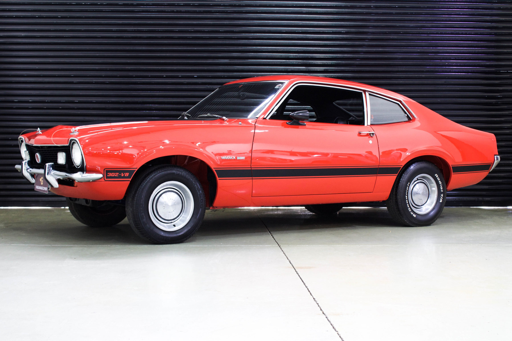
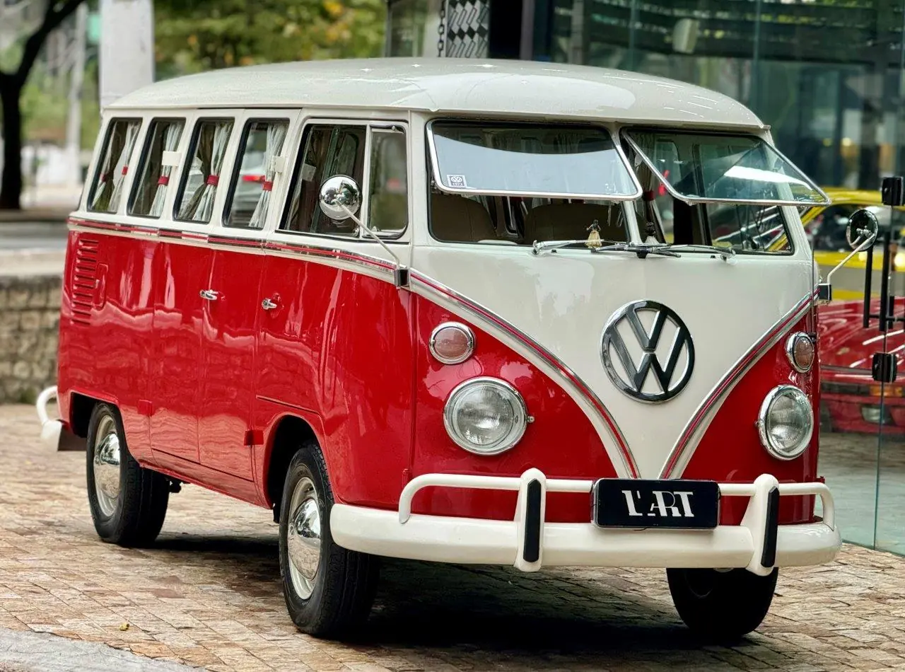
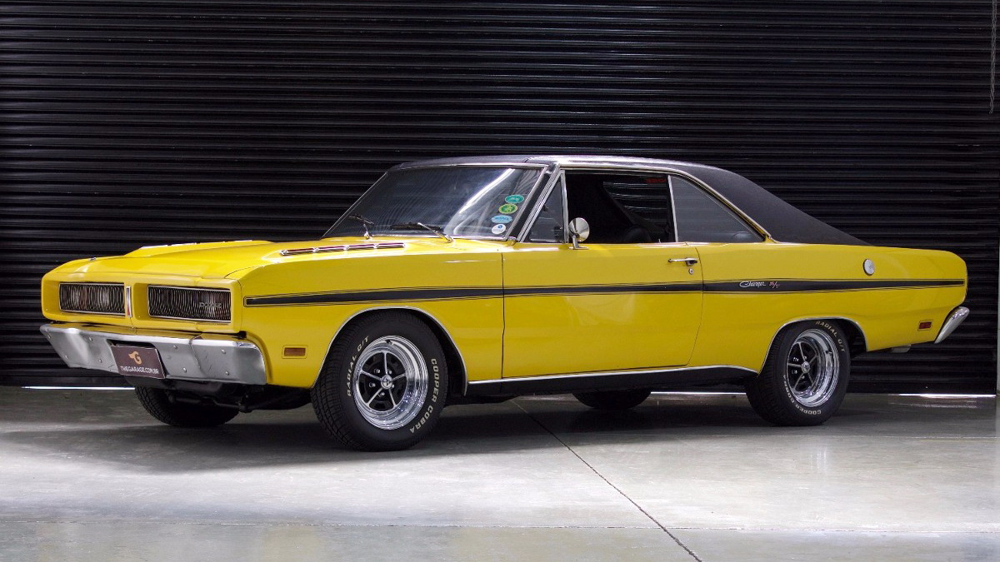
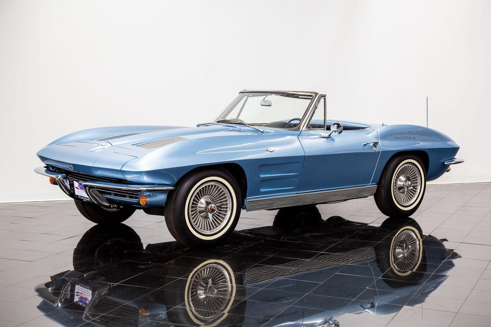
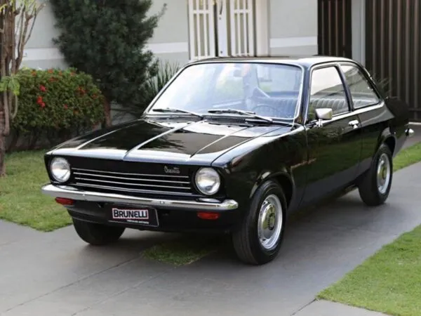

Galeria de Veículos Históricos
Esta galeria foi construída utilizando o recurso de CSS Grid Layout, permitindo uma distribuição organizada em colunas que se adaptam automaticamente para dispositivos móveis.

Volkswagen Fusca (1968)

Chevrolet Opala SS (1974)

Ford Maverick GT (1976)

Ford Mustang Mach 1 (1969)

VW Kombi Corujinha (1972)

Dodge Charger R/T (1975)

Corvette Stingray (1963)

Chevette Tubarão (1973)

Acervo Garagem Clássica